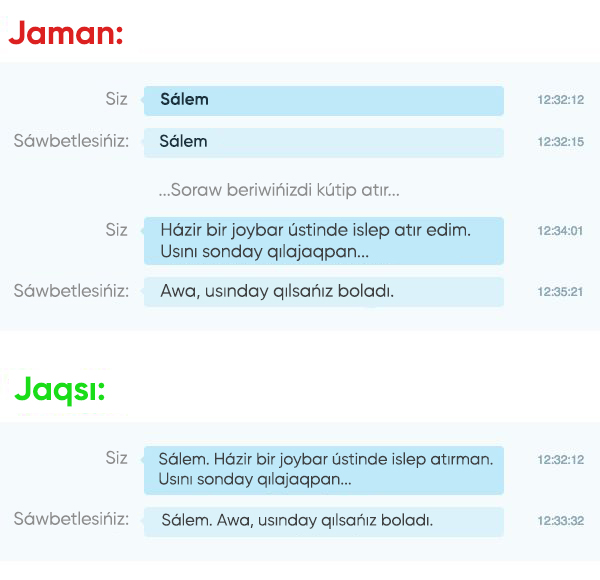

Iltimas, chatta meta-sorawlar bermeń!
Meta-soraw — bul basqa sorawlardı ańlatıwshı soraw, máselen:
— «Túsinikli, biraq bul sorawlarda qanday jamanlıq bar hám nege men olardı soramawım kerek?»
— Olar waqıttı bosqa sarıplaydı! Siziń de, sizge járdem beriwge háreket etip atırǵan basqa adamlardıń da! Siz adamlar menen júzbe-júz bolǵanıńızda mashqalańızǵa tuwrıdan-tuwrı múráját etiwden álpayım bolıwǵa háreket etesiz. Biraq, bul sáwbet pútkilley basqasha. Adamlar sóylegenge qaraǵanda ástenlew jazadı. Kishipeyillik kórsetiw ornına, siz basqa adamdı soraw jazıwıńızdı kútiwge májbúrleysiz, bul bolsa ónimdarlıqtıń joǵalıwına alıp keledi.
Bul nárse usı xabarlarǵa da tiyisli: «Sálem», «Assalawma aleykum», «Sálem, kim bar?», «Waqtıńız bar ma?», «Ping». Tek ǵana soraw beriń!
Bunnan tısqarı, siz dárriw soraw bergenińizde, "asinxron" - óz-ara tásir etiw imkaniyati payda boladı. Eger basqa adam bolmasa hám siz juwap beriliwden aldın shıǵıp ketseńiz, olar siziń "Sálem" ińizge qaraw hám ne bolǵanın oylaw ornına sorawıńızǵa juwap beriwi múmkin.
Hámmesi bir súwrette:
